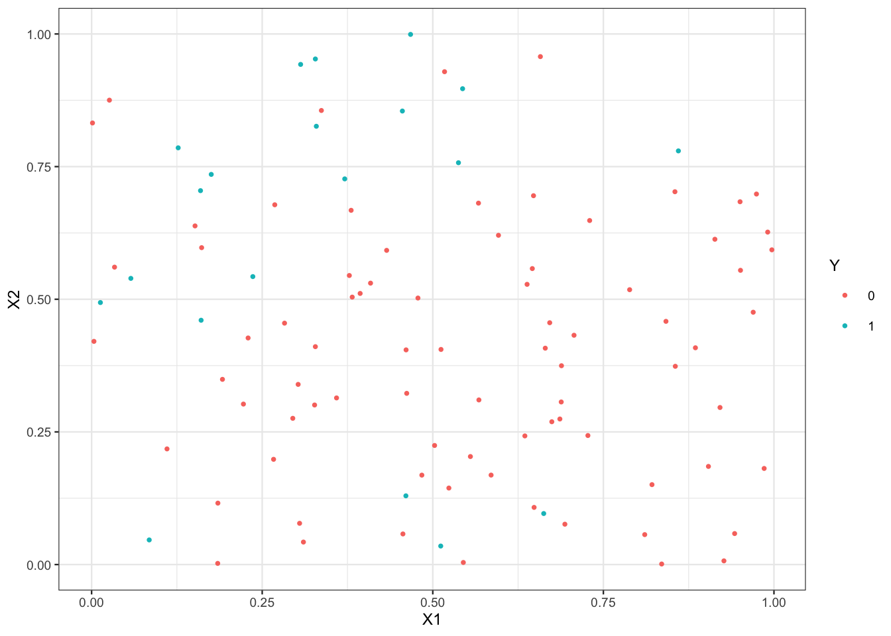
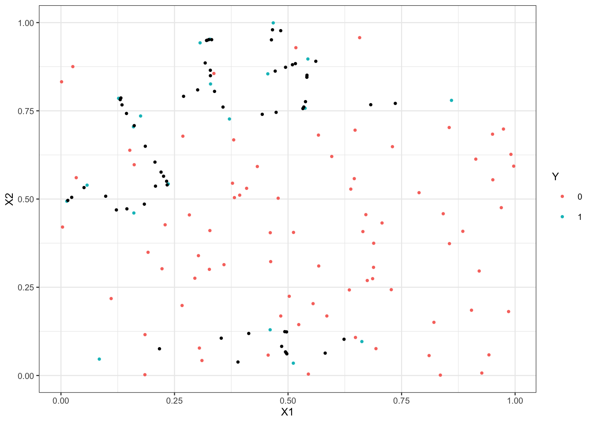
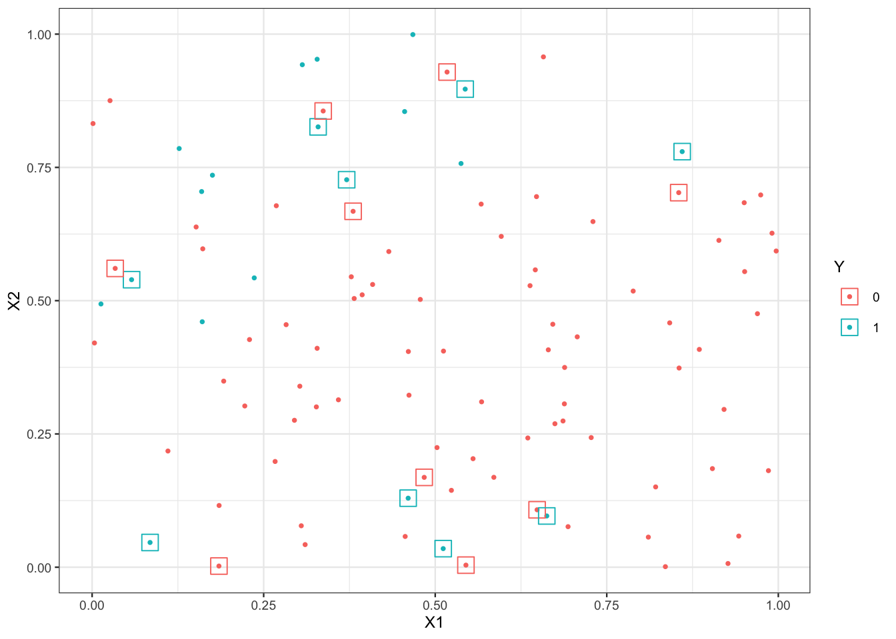
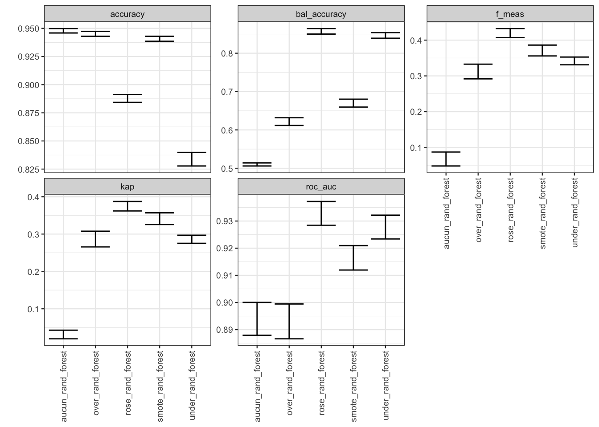
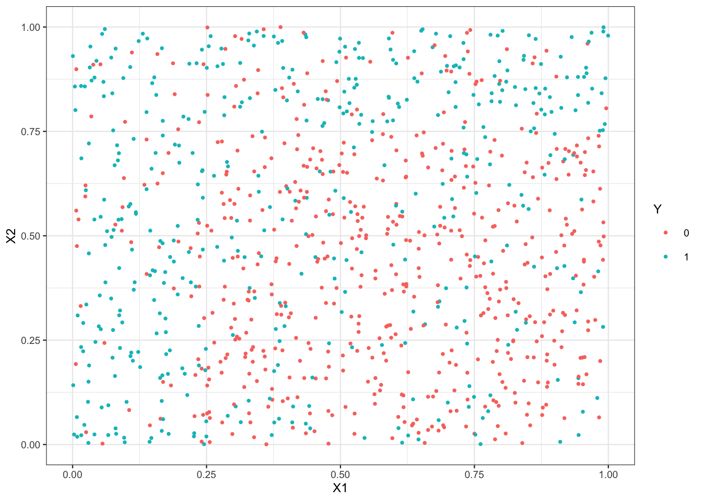
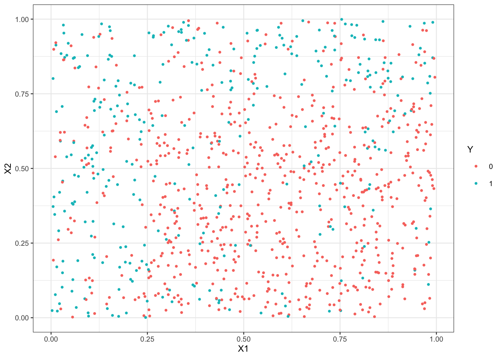
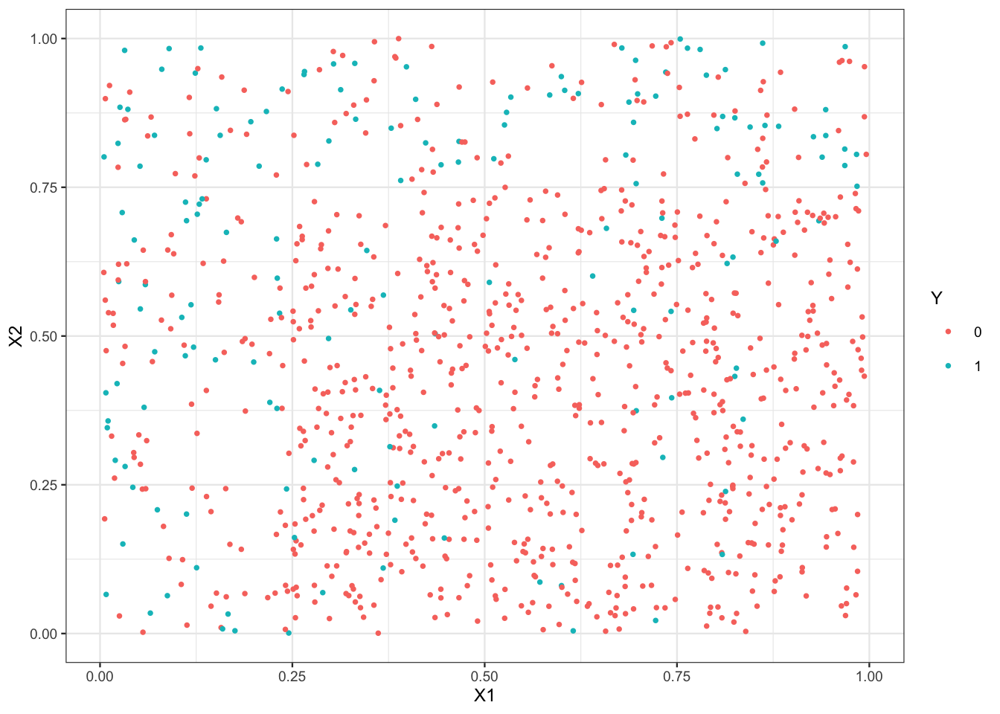

10 Données déséquilibrées
On parle de données déséquilibrées lorsque les deux modalités de la variable cible \(Y\) ne sont pas représentées de façon égale dans l’échantillon, ou plus précisément lorsqu’une des deux modalités est fortement majoritaire. Ce contexte est fréquemment rencontré en pratique, on peut citer les cas de détection de fraudes (peu de fraudeurs), de la présence d’une maladie rare (peu de patients atteints), du risque de crédit (peu de mauvais payeurs)… Les algorithmes standards peuvent être mis en difficultés et de nouvelles stratégies doivent être élaborées. Les stratégies classiques permettant de répondre à ce problème consistent à
- utiliser des critères de performance adaptés au déséquilibre ;
- ré-échantillonner les données pour se rapprocher d’une situation d’équilibre.
Nous présentons ces stratégies à travers quelques exercices.
10.1 Critères de performance pour données déséquilibrées
La notion de risque en machine learning est capitale puisque c’est à partir de l’estimation de ces risques que l’on calibre des algorithmes et que l’on choisit un algorithme de prévision. En présence de données déséquilibré, il convient de choisir un risque adapté. En effet, il est le plus souvent important de parvenir à bien identifier des individus de la classe minoritaire. Des critères tels que l’accuracy ou l’erreur de classification ne sont pas pertinents pour ce cadre. On va privilégier des critères comme
- le balanced accuracy \[\text{Bal Acc}=\frac{1}{2}\mathbf P(g(X)=1|Y=1)+\frac{1}{2}\mathbf P(g(X)=-1|Y=-1)=\frac{\text{TPR+TNR}}{2}.\]
- le \(F_1\)-score \[F_1=2\,\frac{\text{Precision }\times\text{Recall}}{\text{Precision }+\text{Recall}},\] avec \[\text{Precision}=\mathbf P(Y=1|g(X)=1)\quad\text{et}\quad\text{Recall}=\mathbf P(g(X)=1|Y=1).\]
- le kappa de Cohen \[\kappa=\frac{\mathbf P(a)-\mathbf P(e)}{1-\mathbf P(e)}\] où \(\mathbf P(a)\) représente l’accuracy et \(\mathbf P(e)\) l’accuracy sous une hypothèse d’indépendance.
- la courbe ROC et l’AUC…
Comme d’habitude, ces critères sont inconnus et doivent être estimés par des méthodes de ré-échantillonnage de type validation croisée.
Exercice 10.1 (Calculer des critères)
Générer un vecteur d’observations Y de taille 500 selon une loi de Bernoulli de paramètre 0.05.
set.seed(1235) n <- 500 Y <- rbinom(n,1,0.05) |> as.factor()Générer un vecteur de prévisions P1 de taille 500 selon une loi de Bernoulli de paramètre 0.01.
set.seed(987654321) P1 <- rbinom(n,1,0.01) |> factor(levels=c("0","1"))Générer un vecteur de prévision P2 de taille 500 tel que \[\mathcal L(P2|Y=0)=\mathcal B(0.10)\quad\text{et}\quad \mathcal L(P2|Y=1)=\mathcal B(0.85).\]
set.seed(123) P2 <- rep(0,n) P2[Y==1] <- rbinom(sum(Y==1),1,0.85) P2[Y==0] <- rbinom(sum(Y==0),1,0.1) P2 <- factor(P2,levels=c("0","1"))Dresser les tables de contingence de P1 et P2 à l’aide de table. Commenter.
table(P1,Y) ## Y ## P1 0 1 ## 0 471 23 ## 1 5 1 table(P2,Y) ## Y ## P2 0 1 ## 0 432 8 ## 1 44 16On remarque que P1 a tendance à prédire très souvent 0 (la classe majoritaire) alors que P2 est capable d’identifier plus d’invididus de la petite classe. Du point de vue de l’accuracy on va privilégier P1, néanmoins dans de nombreux cas P2 est plus pertinent.
Pour P2, calculer, avec les fonctions usuelles de
R, l’accuracy, le recall et la précision.T2 <- table(P2,Y) acc <- sum(T2[c(1,4)])/sum(T2) rec <- T2[2,2]/sum(T2[,2]) prec <- T2[2,2]/sum(T2[2,])c(acc,rec,prec) ## [1] 0.8960000 0.6666667 0.2666667En déduire le F1-score.
F1 <- 2*(rec*prec)/(rec+prec) F1 ## [1] 0.3809524Même question pour le \(\kappa\) de Cohen.
rand <- sum(T2[1,])/n*sum(T2[,1])/n+sum(T2[2,])/n*sum(T2[,2])/n kappa <- (acc-rand)/(1-rand) kappa ## [1] 0.3353783Retrouver ces indicateurs à l’aide des fonctions de package
yardstick(voir https://yardstick.tidymodels.org/articles/metric-types.html#metrics). On pourra notamment utiliser la fonction metric_set. Utiliser également la fonction confusionMatrix de caret. Analyser les prévisions P1 et P2.tbl <- tibble(P1,P2,obs=Y) |> pivot_longer(-obs,names_to = "Meth",values_to = "Prev") criteres <- metric_set(accuracy,recall,precision,bal_accuracy,j_index,f_meas,kap) tbl |> group_by(Meth) |> criteres(truth=obs,estimate=Prev,event_level = "second") |> pivot_wider(values_from = .estimate,names_from = .metric) |> select(-.estimator) ## # A tibble: 2 × 8 ## Meth accuracy recall precision bal_accuracy j_index ## <chr> <dbl> <dbl> <dbl> <dbl> <dbl> ## 1 P1 0.944 0.0417 0.167 0.516 0.0312 ## 2 P2 0.896 0.667 0.267 0.787 0.574 ## # ℹ 2 more variables: f_meas <dbl>, kap <dbl>caret::confusionMatrix(data=P1,reference=Y,mode="everything",positive="1") ## Confusion Matrix and Statistics ## ## Reference ## Prediction 0 1 ## 0 471 23 ## 1 5 1 ## ## Accuracy : 0.944 ## 95% CI : (0.9201, 0.9625) ## No Information Rate : 0.952 ## P-Value [Acc > NIR] : 0.827961 ## ## Kappa : 0.0484 ## ## Mcnemar's Test P-Value : 0.001315 ## ## Sensitivity : 0.04167 ## Specificity : 0.98950 ## Pos Pred Value : 0.16667 ## Neg Pred Value : 0.95344 ## Precision : 0.16667 ## Recall : 0.04167 ## F1 : 0.06667 ## Prevalence : 0.04800 ## Detection Rate : 0.00200 ## Detection Prevalence : 0.01200 ## Balanced Accuracy : 0.51558 ## ## 'Positive' Class : 1 ## caret::confusionMatrix(data=P2,reference=Y,mode="everything",positive="1") ## Confusion Matrix and Statistics ## ## Reference ## Prediction 0 1 ## 0 432 8 ## 1 44 16 ## ## Accuracy : 0.896 ## 95% CI : (0.8659, 0.9213) ## No Information Rate : 0.952 ## P-Value [Acc > NIR] : 1 ## ## Kappa : 0.3354 ## ## Mcnemar's Test P-Value : 1.212e-06 ## ## Sensitivity : 0.6667 ## Specificity : 0.9076 ## Pos Pred Value : 0.2667 ## Neg Pred Value : 0.9818 ## Precision : 0.2667 ## Recall : 0.6667 ## F1 : 0.3810 ## Prevalence : 0.0480 ## Detection Rate : 0.0320 ## Detection Prevalence : 0.1200 ## Balanced Accuracy : 0.7871 ## ## 'Positive' Class : 1 ##L’accuracy privilégie clairement P1 alors que d’autres critères comme le balanced accuracy, le F1-score ou le kappa de Cohen vont sélectionner P2. Ces derniers critères sont mieux adaptés pour prendre en considération la capacité à bien identifier la classe minoritaire.
10.2 Ré-équilibrage
En complément du choix d’un critère pertinent, il peut être intéressant de tenter de ré-équilibrer l’échantillon pour aider les algorithmes à mieux détecter les individus de la classe minoritaire. Les méthodes classiques consistent à créer de nouvelles observations de la classe minoritaire (oversampling) et/ou supprimer des individus de la classe minoritaire (undersampling).
Exercice 10.2 (Quelques algorithmes de ré-équilibrage) On considère le jeu de données df ci-dessous où on cherche à prédire Y par X1 et X2.
n <- 2000
set.seed(1234)
X1 <- runif(n)
set.seed(5678)
X2 <- runif(n)
set.seed(9012)
R1 <- X1<=0.25
R2 <- (X1>0.25 & X2>=0.75)
R3 <- (X1>0.25 & X2<0.75)
Y <- rep(0,n)
Y[R1] <- rbinom(sum(R1),1,0.75)
Y[R2] <- rbinom(sum(R2),1,0.75)
Y[R3] <- rbinom(sum(R3),1,0.25)
df1 <- tibble(X1,X2,Y)
df1$Y <- factor(df1$Y)
indDY1 <- which(df1$Y==1)
df1.1 <- df1[-indDY1[1:650],]
df1.2 <- df1.1[sample(nrow(df1.1),1000),]
df <- df1.2[sample(nrow(df1.2),100),]
rownames(df) <- NULL
p1 <- ggplot(df)+aes(x=X1,y=X2,color=Y)+geom_point()
p1
On a ici 4 fois plus d’observations dans le groupe 0.
summary(df$Y)
## 0 1
## 80 20On commence par faire du oversampling avec la fonction step_upsample du package
themis. On pourra s’inspire de https://github.com/tidymodels/themis.Effectuer le ré-échantillonnage et expliquer.
library(themis) recipe(Y ~ ., data = df) |> step_upsample(Y) |> prep() |> bake(new_data = NULL) |> count(Y) ## # A tibble: 2 × 2 ## Y n ## <fct> <int> ## 1 0 80 ## 2 1 80On duplique des observations du groupe 1 pour atteindre le nombre d’observations du groupe 0.
Corriger les paramètres de la fonction de manière à avoir 80 observations dans le groupe 0 et 60 dans le groupe 1.
Il suffit de laisser intact le groupe 0 et de multiplier par 3 le nombre d’observations du groupe 1. Cela s’effectue avec l’option
over_ratio.recipe(Y ~ ., data = df) |> step_upsample(Y,over_ratio = 0.75) |> prep() |> bake(new_data = NULL) |> count(Y) ## # A tibble: 2 × 2 ## Y n ## <fct> <int> ## 1 0 80 ## 2 1 60
On s’intéresse maintenant à l’algorithme SMOTE
Utiliser la fonction step_smote avec
k=3et les autres valeurs de paramètres par défautsmote1 <- recipe(Y ~ ., data = df) |> step_smote(Y,neighbors = 3) |> prep() |> bake(new_data = NULL) smote1 |> count(Y) ## # A tibble: 2 × 2 ## Y n ## <fct> <int> ## 1 0 80 ## 2 1 8060 observations ont été crées par l’algorithme SMOTE.
Visualiser les observations smote.
new <- anti_join(smote1,df) old <- inner_join(smote1,df) ggplot(old)+aes(x=X1,y=X2)+geom_point(aes(color=Y))+ geom_point(data=new,color="black")
Corriger les paramètres de la fonction de manière à avoir 80 observations dans le groupe 0 et 60 dans le groupe 1.
Ici encore il “suffit” de jouer avec l’option
over_ratio.recipe(Y ~ ., data = df) |> step_smote(Y,over_ratio = 0.75,neighbors = 3) |> prep() |> bake(new_data = NULL) |> count(Y) ## # A tibble: 2 × 2 ## Y n ## <fct> <int> ## 1 0 80 ## 2 1 60
Refaire la question précedente avec l’algorithme ROSE (voir https://journal.r-project.org/archive/2014/RJ-2014-008/RJ-2014-008.pdf).
rose <- recipe(Y ~ ., data = df) |> step_rose(Y,seed = 1234) |> prep() |> bake(new_data = NULL) rose |> count(Y) ## # A tibble: 2 × 2 ## Y n ## <fct> <int> ## 1 0 85 ## 2 1 75inner_join(rose,df) ## # A tibble: 0 × 3 ## # ℹ 3 variables: X1 <dbl>, X2 <dbl>, Y <fct>Toutes les observations des nouvelles données sont différentes des précédentes. On remarque que ce n’est plus le cas avec le jeu de paramètres suivant où la méthode
ROSEdevient un mélange de random oversampling et under sampling.rose1 <- recipe(Y ~ ., data = df) |> step_rose(Y,seed = 1234,minority_smoothness = 0,majority_smoothness = 0) |> prep() |> bake(new_data = NULL) rose1 |> count(Y) ## # A tibble: 2 × 2 ## Y n ## <fct> <int> ## 1 0 85 ## 2 1 75 inner_join(rose1,df) ## # A tibble: 160 × 3 ## X1 X2 Y ## <dbl> <dbl> <fct> ## 1 0.688 0.306 0 ## 2 0.648 0.108 0 ## 3 0.658 0.957 0 ## 4 0.648 0.695 0 ## 5 0.00131 0.832 0 ## 6 0.337 0.856 0 ## 7 0.730 0.648 0 ## 8 0.986 0.181 0 ## 9 0.303 0.340 0 ## 10 0.161 0.597 0 ## # ℹ 150 more rowsOn souhaite maintenant ré-équilibrer par random undersampling. Utiliser la fonction step_downsample pour effectuer un tel ré-équilibrage. Ici encore on pourra faire varier les paramètres.
recipe(Y ~ ., data = df) |> step_downsample(Y) |> prep() |> bake(new_data=NULL) |> count(Y) ## # A tibble: 2 × 2 ## Y n ## <fct> <int> ## 1 0 20 ## 2 1 20On supprime des observations du groupe 0 pour avoir le même nombre d’observations dans les deux groupes. Ici encore on peut contrôler le niveau de ré-équilibrage avec
under_ratio:recipe(Y ~ ., data = df) |> step_downsample(Y,under_ratio=2) |> prep() |> bake(new_data=NULL) |> count(Y) ## # A tibble: 2 × 2 ## Y n ## <fct> <int> ## 1 0 40 ## 2 1 20On passe maintenant à l’algorithme Tomek.
Sans utiliser la fonction step_tomek identifier les paires d’observations qui ont un lien de Tomek. On pourra utiliser la fonction nng du package
cccd.On rappelle que deux observations ont un lien de Tomek si elles sont plus proches voisins mutuels et de deux groupes différents. On commence donc par identifier les plus proches voisins mutuels :
library(cccd) unppv <- nng(x=df[,1:2],k=1,mutual=TRUE) graph_mut <- as_data_frame(unppv) graph_mut ## from to ## 1 1 13 ## 2 2 50 ## 3 3 54 ## 4 4 98 ## 5 5 42 ## 6 6 35 ## 7 9 96 ## 8 12 30 ## 9 16 41 ## 10 18 100 ## 11 19 44 ## 12 20 92 ## 13 24 28 ## 14 26 87 ## 15 27 91 ## 16 29 64 ## 17 31 82 ## 18 32 94 ## 19 33 69 ## 20 36 68 ## 21 37 99 ## 22 40 62 ## 23 45 55 ## 24 48 51 ## 25 52 66 ## 26 56 58 ## 27 65 75 ## 28 67 77 ## 29 72 86 ## 30 73 93 ## 31 74 89Puis on récupère les groupes de ces observations afin de ne conserver que les paires qui proviennent de groupes différents :
Yfrom <- df$Y[graph_mut$from] Yto <- df$Y[graph_mut$to] tomek_link <- graph_mut |> filter(Yfrom!=Yto) tomek_link ## from to ## 1 4 98 ## 2 16 41 ## 3 18 100 ## 4 19 44 ## 5 26 87 ## 6 29 64 ## 7 45 55 ## 8 72 86 ## 9 74 89Retrouver ces paires à l’aide de la fonction step_tomek.
tomek1 <- recipe(Y ~ ., data = df) |> step_tomek(Y) |> prep() |> bake(new_data=NULL) tomek1 |> count(Y) ## # A tibble: 2 × 2 ## Y n ## <fct> <int> ## 1 0 71 ## 2 1 11Visualiser les observations supprimées.
tomek_sup <- anti_join(df,tomek1) ggplot(df)+aes(x=X1,y=X2,color=Y)+geom_point()+ geom_point(data=tomek_sup,shape=0,size=4)
Exercice 10.3 (Comparer des méthodes de ré-équilibrage avec tidymodels) On considère les données utilisées dans l’exemple https://www.tidymodels.org/learn/models/sub-sampling/ :
imbal_data <-
read_csv("https://tidymodels.org/learn/models/sub-sampling/imbal_data.csv") |>
mutate(Class = factor(Class))
dim(imbal_data)
## [1] 1200 16
imbal_data |> count(Class)
## # A tibble: 2 × 2
## Class n
## <fct> <int>
## 1 Class1 60
## 2 Class2 1140Class1 est la classe minoritaire et représente l’évènement d’intérêt.
Créer une recette permettant de ré-équilibrer les données avec la méthode
ROSE(on utilisera les paramètres par défaut).rose_rec <- recipe(Class~.,data=imbal_data) |> step_rose(Class)On souhaite appliquer l’algorithme des forêts aléatoires sur les données ré-équilibrées. Paramétrer l’algorithme en
tidymodels. On utilisera comme valeurs de paramètres :mtry = 3, min_n = 1,trees = 1000.foret <- rand_forest(mtry = 3, min_n = 1,trees = 1000) %>% set_engine("ranger") %>% set_mode("classification")Créer un workflow qui combine la recette et l’algorithme des forêts aléatoires.
rf_rose_workflow <- workflow() |> add_model(foret) |> add_recipe(rose_rec)Évaluer les performances de la méthode en utilisant une validation croisée 10 blocs. On utilisera comme critère l’
accuracy, l’indexJ de Youden, lekappa de Cohen, et l’auc.set.seed(1234) cv_folds <- vfold_cv(imbal_data,v = 10,strata = "Class") criteres <- metric_set(accuracy,roc_auc, j_index,kap) foret_rose_res <- fit_resamples(rf_rose_workflow, resamples = cv_folds, metrics=criteres, control = control_resamples(save_pred = TRUE) )foret_rose_res |> collect_metrics() ## # A tibble: 4 × 6 ## .metric .estimator mean n std_err .config ## <chr> <chr> <dbl> <int> <dbl> <chr> ## 1 accuracy binary 0.889 10 0.00913 Preprocessor1_Mod… ## 2 j_index binary 0.745 10 0.0490 Preprocessor1_Mod… ## 3 kap binary 0.395 10 0.0513 Preprocessor1_Mod… ## 4 roc_auc binary 0.933 10 0.0176 Preprocessor1_Mod…Comparer ces performances avec l’algorithme sans ré-équilibrage. Interpréter.
set.seed(321) rf_workflow <- workflow() |> add_model(foret) |> add_formula(Class~.) foret_res <- fit_resamples(rf_workflow, resamples = cv_folds, metrics=criteres, control = control_resamples(save_pred = TRUE) )foret_res |> collect_metrics() ## # A tibble: 4 × 6 ## .metric .estimator mean n std_err .config ## <chr> <chr> <dbl> <int> <dbl> <chr> ## 1 accuracy binary 0.95 10 0.00527 Preprocessor1_Mod… ## 2 j_index binary 0 10 0 Preprocessor1_Mod… ## 3 kap binary 0 10 0 Preprocessor1_Mod… ## 4 roc_auc binary 0.933 10 0.00894 Preprocessor1_Mod…Le rééquilibrage n’améliore pas pour :- l’accuracy : les données étant déséquilibrées, prédire toujours la classe majoritaire est performant pour ce critère ;
- l’AUC : ce critère est basé sur les probabilités et donc moins sensibles aux prévisions de groupe avec un seuil de 0.5. Il est en revanche beaucoup plus pertinent pour les deux autres critères. On peut expliquer cela en regardant lesvalauers prédites. Ré-équilibrer commet plus d’erreur de prévision mais permet de mieux détecter le classe minoritatire, ce qui est souvent le plus pertinent.
foret_rose_res |> collect_predictions() |> count(.pred_class,Class) |> pivot_wider(values_from = "n",names_from = "Class") ## # A tibble: 2 × 3 ## .pred_class Class1 Class2 ## <fct> <int> <int> ## 1 Class1 53 126 ## 2 Class2 7 1014 foret_res |> collect_predictions() |> count(.pred_class,Class) |> pivot_wider(values_from = "n",names_from = "Class") ## # A tibble: 1 × 3 ## .pred_class Class1 Class2 ## <fct> <int> <int> ## 1 Class2 60 1140En vous inspirant de la syntaxe présentée ici https://www.tmwr.org/workflow-sets, comparer les performances de l’algorithme des forêts aléatoires utilisant différent type de ré-équilbrage (recettes), par exemple : oversampling, undersampling, smote, rose et aucun ré-équilibrage. On aggrégera touts ces recettes à l’aide de la fonction
workflow_set.On commence par préparer les recettes sur le ré-équilibrage.
aucun_rec <- recipe(Class ~ ., data = imbal_data) over_rec <- recipe(Class ~ ., data = imbal_data) |> step_upsample(Class) smote_rec <- recipe(Class ~ ., data = imbal_data) |> step_smote(Class,neighbors = 3) rose_rec <- recipe(Class ~ ., data = imbal_data) |> step_rose(Class) under_rec <- recipe(Class ~ ., data = imbal_data) |> step_downsample(Class)On définit ensuite les paramètres de la forêt aléatoire.
rf_spec <- rand_forest(mtry = tune(), min_n = 1,trees = 1000) |> set_engine("ranger") |> set_mode("classification")On aggrège les recettes avec
worflow_set.wflow <- workflow_set( preproc = list(aucun=aucun_rec, over=over_rec, smote=smote_rec, rose=rose_rec, under=under_rec), models=list(rf_spec) )Il nous reste à définir les blocs (validation croisée 5 blocs répétée 10 fois)
set.seed(1234) bloc <- vfold_cv(imbal_data,v=5,repeats = 10)et à lancer les validations croisées
results <- wflow |> workflow_map(fn="tune_grid", resamples=bloc, grid=5, metrics=metric_set(kap,f_meas,bal_accuracy,accuracy,roc_auc), seed = 321, control=control_grid(event_level = "first",save_pred = TRUE))On obtient les résultats suivants :
results |> rank_results(select_best = TRUE) |> select(wflow_id,.metric,mean) |> mutate(mean=round(mean,3)) |> pivot_wider(names_from = .metric,values_from = mean) ## # A tibble: 5 × 6 ## wflow_id accuracy bal_accuracy f_meas kap roc_auc ## <chr> <dbl> <dbl> <dbl> <dbl> <dbl> ## 1 rose_rand_fore… 0.888 0.857 0.42 0.375 0.933 ## 2 smote_rand_for… 0.941 0.67 0.371 0.341 0.916 ## 3 over_rand_fore… 0.945 0.622 0.312 0.287 0.893 ## 4 under_rand_for… 0.834 0.846 0.342 0.286 0.928 ## 5 aucun_rand_for… 0.948 0.51 0.068 0.031 0.894 results |> rank_results(select_best = TRUE) |> ggplot()+ aes(x=wflow_id,ymin=mean-std_err,ymax=mean+std_err,y=mean)+ geom_errorbar()+ facet_wrap(~.metric,scales = "free_y")+ scale_x_discrete(guide = guide_axis(angle = 90),name=NULL)+ylab("")
Les méthodes de ré-équilibrage ont ici permis d’améliorer les différents critères à l’exception de l’accuracy (normal dans la mesure où ce critère n’est pas adapté aux données déséquilibrées). La méthode rose se retrouve régulièrement parmi les meilleurs approches. On peut donc l’extraire
(best_result <- results |> extract_workflow_set_result("rose_rand_forest") |> select_best(metric="kap")) ## # A tibble: 1 × 2 ## mtry .config ## <int> <chr> ## 1 4 Preprocessor1_Model3 (final <- results |> extract_workflow("rose_rand_forest") |> finalize_workflow(best_result) |> fit(data=imbal_data)) ## ══ Workflow [trained] ══════════════════════════════════════ ## Preprocessor: Recipe ## Model: rand_forest() ## ## ── Preprocessor ──────────────────────────────────────────── ## 1 Recipe Step ## ## • step_rose() ## ## ── Model ─────────────────────────────────────────────────── ## Ranger result ## ## Call: ## ranger::ranger(x = maybe_data_frame(x), y = y, mtry = min_cols(~4L, x), num.trees = ~1000, min.node.size = min_rows(~1, x), num.threads = 1, verbose = FALSE, seed = sample.int(10^5, 1), probability = TRUE) ## ## Type: Probability estimation ## Number of trees: 1000 ## Sample size: 2280 ## Number of independent variables: 15 ## Mtry: 4 ## Target node size: 1 ## Variable importance mode: none ## Splitrule: gini ## OOB prediction error (Brier s.): 0.1113023
Exercice 10.4 (Comparaison de méthodes de ré-équilibrage avec le package UBL) On considère 3 jeux de données df1, df2 et df3.
n <- 2000
set.seed(12345)
X1 <- runif(n)
set.seed(5678)
X2 <- runif(n)
set.seed(9012)
R1 <- X1<=0.25
R2 <- (X1>0.25 & X2>=0.75)
R3 <- (X1>0.25 & X2<0.75)
Y <- rep(0,n)
Y[R1] <- rbinom(sum(R1),1,0.75)
Y[R2] <- rbinom(sum(R2),1,0.75)
Y[R3] <- rbinom(sum(R3),1,0.25)
df1 <- data.frame(X1,X2,Y)
df1$Y <- factor(df1$Y)
indDY1 <- which(df1$Y==1)
df2 <- df1[-indDY1[1:400],]
df3 <- df1[-indDY1[1:700],]
df1 <- df1[sample(nrow(df1),1000),]
df2 <- df2[sample(nrow(df2),1000),]
df3 <- df3[sample(nrow(df3),1000),]Comparer la distribution de Y pour ces trois jeux de données et visualiser les observations.
summary(df1$Y) ## 0 1 ## 559 441 summary(df2$Y) ## 0 1 ## 692 308 summary(df3$Y) ## 0 1 ## 842 158ggplot(df1)+aes(x=X1,y=X2,color=Y)+geom_point()
ggplot(df2)+aes(x=X1,y=X2,color=Y)+geom_point()
ggplot(df3)+aes(x=X1,y=X2,color=Y)+geom_point()
Les trois échantillons sont de même taille. Le groupe 0 est toujours plus important que le groupe 1 mais le déséquilibre est plus prononcé pour l’échantillon 2 et surtout l’échantillon 3.
On sépare ces 3 échantillons en un échantillon d’apprentissage et un échantillon test.
set.seed(123) library(caret) a1 <- createDataPartition(1:nrow(df1),p=2/3) a2 <- createDataPartition(1:nrow(df2),p=2/3) a3 <- createDataPartition(1:nrow(df3),p=2/3) train1 <- df1[a1$Resample1,] train2 <- df2[a2$Resample1,] train3 <- df3[a3$Resample1,] test1 <- df1[-a1$Resample1,] test2 <- df2[-a2$Resample1,] test3 <- df3[-a3$Resample1,]Ajuster une forêt aléatoire sur les 3 échantillon d’apprentissage, calculer les labels prédits sur les échantillons tests et estimer les différents indicateurs vus en cours à l’aide de confusionMatrix.
library(randomForest) rf1 <- randomForest(Y~.,data=train1) rf2 <- randomForest(Y~.,data=train2) rf3 <- randomForest(Y~.,data=train3) p1 <- predict(rf1,newdata=test1) p2 <- predict(rf2,newdata=test2) p3 <- predict(rf3,newdata=test3)confusionMatrix(data=p1,reference=test1$Y) ## Confusion Matrix and Statistics ## ## Reference ## Prediction 0 1 ## 0 141 67 ## 1 43 81 ## ## Accuracy : 0.6687 ## 95% CI : (0.6152, 0.7191) ## No Information Rate : 0.5542 ## P-Value [Acc > NIR] : 1.385e-05 ## ## Kappa : 0.3187 ## ## Mcnemar's Test P-Value : 0.02831 ## ## Sensitivity : 0.7663 ## Specificity : 0.5473 ## Pos Pred Value : 0.6779 ## Neg Pred Value : 0.6532 ## Prevalence : 0.5542 ## Detection Rate : 0.4247 ## Detection Prevalence : 0.6265 ## Balanced Accuracy : 0.6568 ## ## 'Positive' Class : 0 ## confusionMatrix(data=p2,reference=test2$Y) ## Confusion Matrix and Statistics ## ## Reference ## Prediction 0 1 ## 0 196 48 ## 1 37 51 ## ## Accuracy : 0.744 ## 95% CI : (0.6935, 0.7901) ## No Information Rate : 0.7018 ## P-Value [Acc > NIR] : 0.05113 ## ## Kappa : 0.3681 ## ## Mcnemar's Test P-Value : 0.27808 ## ## Sensitivity : 0.8412 ## Specificity : 0.5152 ## Pos Pred Value : 0.8033 ## Neg Pred Value : 0.5795 ## Prevalence : 0.7018 ## Detection Rate : 0.5904 ## Detection Prevalence : 0.7349 ## Balanced Accuracy : 0.6782 ## ## 'Positive' Class : 0 ## confusionMatrix(data=p3,reference=test3$Y) ## Confusion Matrix and Statistics ## ## Reference ## Prediction 0 1 ## 0 253 47 ## 1 21 11 ## ## Accuracy : 0.7952 ## 95% CI : (0.7477, 0.8373) ## No Information Rate : 0.8253 ## P-Value [Acc > NIR] : 0.933101 ## ## Kappa : 0.1373 ## ## Mcnemar's Test P-Value : 0.002432 ## ## Sensitivity : 0.9234 ## Specificity : 0.1897 ## Pos Pred Value : 0.8433 ## Neg Pred Value : 0.3438 ## Prevalence : 0.8253 ## Detection Rate : 0.7620 ## Detection Prevalence : 0.9036 ## Balanced Accuracy : 0.5565 ## ## 'Positive' Class : 0 ##On remarque que l’accuracy est meilleur pour le 3ème échantillon, contrairement à des indicateurs tels que le \(\kappa\) de Cohen ou le balanced accuracy.
On considère uniquement l’échantillon df3. Refaire l’analyse précédente en utilisant des techniques de ré-échantillonnage. On pourra utiliser les fonctions du package
UBL.Le ré-équilibrage doit porter uniquement sur l’échantillon d’apprentissage. On propose d’utiliser le radom oversampling, smote, le random undersampling et tomek.
library(UBL) train3.under <- RandUnderClassif(Y~.,dat=train3) train3.over <- RandOverClassif(Y~.,dat=train3) train3.smote <- SmoteClassif(Y~.,dat=train3) train3.tomek <- TomekClassif(Y~.,dat=train3)[[1]]On entraîne les forêts aléatoires sur ces nouveaux échantillons et on prédit les individus de l’échantillon test
rf3.under <- randomForest(Y~.,data=train3.under) rf3.over <- randomForest(Y~.,data=train3.over) rf3.smote <- randomForest(Y~.,data=train3.smote) rf3.tomek <- randomForest(Y~.,data=train3.tomek) p3.under <- predict(rf3.under,newdata=test3) p3.over <- predict(rf3.over,newdata=test3) p3.smote <- predict(rf3.smote,newdata=test3) p3.tomek <- predict(rf3.tomek,newdata=test3) mat_prev <- data.frame(aucun=p3,under=p3.under,over=p3.over,smote=p3.smote,tomek=p3.tomek,obs=test3$Y)On en déduit les critères
monba <- function(prev,obs){confusionMatrix(prev,obs,positive="1")$byClass[11]} monF1 <- function(prev,obs){confusionMatrix(prev,obs,positive="1")$byClass[7]} monkappa <- function(prev,obs){confusionMatrix(prev,obs,positive="1")$overall[2]} mat_prev |> pivot_longer(-obs,names_to="method",values_to="prev") |> group_by(method,.add=TRUE) |> summarize(Acc=mean(obs==prev),BA=monba(prev,obs),F1=monF1(prev,obs),kapp=monkappa(prev,obs),.groups="keep") |> summarize_all(~round(.,3)) ## # A tibble: 5 × 5 ## method Acc BA F1 kapp ## <chr> <dbl> <dbl> <dbl> <dbl> ## 1 aucun 0.795 0.557 0.244 0.137 ## 2 over 0.792 0.629 0.389 0.264 ## 3 smote 0.699 0.634 0.383 0.204 ## 4 tomek 0.819 0.564 0.25 0.17 ## 5 under 0.675 0.687 0.432 0.249L’accuracy est sans surprise meilleur lorsqu’on ne ré-équilibre pas. Cependant les méthodes de ré-équilibrage permettent ici d’améliorer (plus ou moins) les autres critères.
10.3 Exercices supplémentaires
Exercice 10.5 (Echantillonnage rétrospectif) Dans le cadre de l’échantillonnage rétrospectif pour le modèle logistique vu en cours, démontrer la propriété qui lie le modèle logistique initial au modèle ré-équilibré.
On a \[\text{logit}\, p_\beta(x_i)=\log\frac{\mathbf P(y_i=1)}{\mathbf P(y_i=0)}\quad\text{et}\quad \text{logit}\, p_\gamma(x_i)=\log\frac{\mathbf P(y_i=1|s_i=1)}{\mathbf P(y_i=0|s_i=1)}.\] Or \[\mathbf P(y_i=1|s_i=1)=\frac{\mathbf P(y_i=1,s_i=1)}{\mathbf P(s_i=1)}=\frac{\mathbf P(s_i=1|y_i=1)\mathbf P(y_i=1)}{\mathbf P(s_i=1)}\] et \[\mathbf P(y_i=0|s_i=1)=\frac{\mathbf P(y_i=0,s_i=1)}{\mathbf P(s_i=1)}=\frac{\mathbf P(s_i=1|y_i=0)\mathbf P(y_i=0)}{\mathbf P(s_i=1)}.\] Donc \[\text{logit}\, p_\gamma(x_i)=\log\frac{\mathbf P(y_i=1)}{\mathbf P(y_i=0)}+\log\frac{\mathbf P(s_i=1|y_i=1)}{\mathbf P(s_i=1|y_i=0)}=\text{logit}\,p_\beta(x_i)+\log\left(\frac{\tau_{1}}{\tau_{0}}\right).\]
Exercice 10.6 (Echantillonnage rétrospectif) Une étude cas/témoins est réalisée pour mesurer l’effet du tabac sur une pathologie. Pour ce faire, on choisit \(n_1=250\) patients atteints de la pathologie (cas) et \(n_0=250\) patients sains (témoins). Les résultats de l’étude sont présentés ci-dessous
| Fumeur | Non fumeur | |
|---|---|---|
| Non malade | 48 | 202 |
| Malade | 208 | 42 |
A partir des données obtenues, estimer à l’aide d’un modèle logistique la probabilité d’être atteint pour un fumeur, puis pour un non fumeur.
Pour simplifier on va construire un jeu de données qui correspond au résultat :
X<-rep(1,500) X[1:256]<-"fumeur" X[257:500]<-"non_fumeur" Y<-rep(1,500) Y[1:48]<-0 Y[257:458]<-0 Y<-factor(Y) X<-factor(X) df <- data.frame(Y,X) model<-glm(Y~.,data=df,family=binomial)On peut maintenant estimer le modèle logistique et obtenir les prévisions demandées :
newX <- data.frame(X=c("fumeur","non_fumeur")) predict(model,newdata=newX,type="response") |> round(3) ## 1 2 ## 0.812 0.172Comment interpréter ces deux probabilités ? Est-ce qu’elles estiment la probabilité d’être atteint pour un individu quelconque dans la population ?
Non ! On a échantillonné de manière à avoir autant de patients malades que non malades, ce qui n’est pas vrai dans la population totale. On est face à un biais d’échantillonnage que l’on peut corriger à l’aide de l’exercice précédent.
Des études précédentes ont montré que cinq individus sur mille sont atteints par la pathologie dans la population entière. En utilisant la propriété de l’exercice précédent, en déduire les probabilités d’être atteint pour un fumeur et un non fumeur dans la population.
On rappelle que \[\tau_1=\mathbf P(S=1|Y=1)=\frac{\mathbf P(Y=1|S=1)\mathbf P(S=1)}{\mathbf P(Y=1)}.\] Comme \(\mathbf P(Y=1|S=1)=\mathbf P(Y=0|S=1)=1/2\), on déduit \[\frac{\tau_1}{\tau_0}=\frac{\mathbf P(Y=0)}{\mathbf P(Y=1)}=\frac{\pi_0}{\pi_1}=\frac{0.005}{0.995}.\] On obtient ainsi les probabilités demandées avec
beta<-model$coefficients pi1<-0.005 pi0<-0.995 beta1_cor <-beta[1]-log(pi0/pi1) p1F <- exp(beta1_cor)/(1+exp(beta1_cor)) p1NF <- exp(beta1_cor+beta[2])/(1+exp(beta1_cor+beta[2])) p1F ## (Intercept) ## 0.02131148 p1NF ## (Intercept) ## 0.001043738On peut retrouver les paramètres du modèle corrigé en utilisant l’option
offsetmod_cor <- glm(Y~.,data=df,family="binomial",offset = rep(log(pi0/pi1),nrow(df))) coef(mod_cor) ## (Intercept) Xnon_fumeur ## -3.826968 -3.036935 c(beta1_cor,beta[2]) ## (Intercept) Xnon_fumeur ## -3.826968 -3.036935